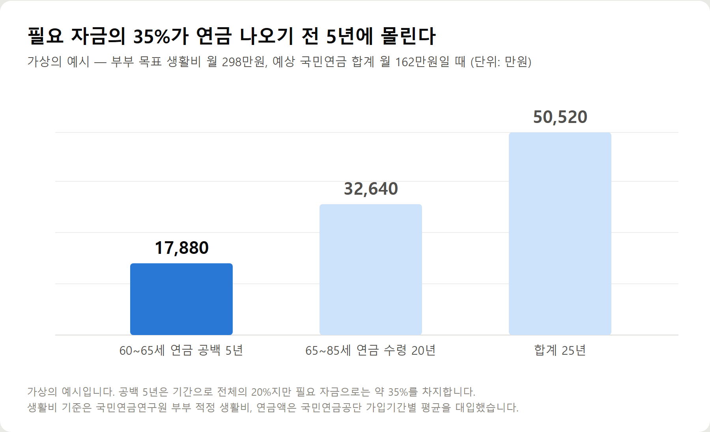

<meta charset="utf-8">
<title>노후자금 계산하는 법 — 부부 적정 생활비 298만원 — 나의 투자 그리고 행복한 여행</title>
<meta name="description" content="노후자금 계산법과 국민연금 예상수령액 조회 방법, 부부 적정 노후생활비 298만원 기준으로 부족분 계산하는 순서를 2026년 기준 공식 자료로 정리했습니다.">
<meta name="viewport" content="width=device-width, initial-scale=1">
<link rel="canonical" href="https://worldtraveler1.tistory.com/99">
<link rel="preconnect" href="https://fonts.googleapis.com">
<link rel="preconnect" href="https://fonts.gstatic.com" crossorigin>
<link rel="stylesheet" href="https://fonts.googleapis.com/css2?family=Hahmlet:wght@400;600;800&family=IBM+Plex+Mono:wght@400;500&family=IBM+Plex+Sans+KR:wght@300;400;500;600&display=swap">

<style>
  :root{
    --paper:#F2EEE6;--surface:#FAF8F3;--surface-2:#E7E1D5;
    --ink:#191510;--ink-2:#4A4235;--ink-3:#7D7364;
    --line:#D6CEBF;--line-soft:#E4DDD0;--accent:#B06A15;--accent-bright:#C2761A;
    --up:#E5484D;--down:#3B82F6;
    --f-display:"Hahmlet",'Nanum Myeongjo',"Apple SD Gothic Neo",serif;
    --f-body:"IBM Plex Sans KR","Apple SD Gothic Neo","Malgun Gothic",sans-serif;
    --f-mono:"IBM Plex Mono","SFMono-Regular",Consolas,monospace;
    --pad:clamp(20px,5vw,64px);
  }
  @media (prefers-color-scheme:dark){
    :root:not([data-theme="light"]){
      --paper:#0B1120;--surface:#121A2C;--surface-2:#1A2439;
      --ink:#E9EEF7;--ink-2:#A9B5C9;--ink-3:#72809A;
      --line:#26314A;--line-soft:#1D2739;--accent:#E8A33D;--accent-bright:#F0B45C;
    }
  }
  *{box-sizing:border-box;}
  body{margin:0;background:var(--paper);color:var(--ink);font-family:var(--f-body);
    font-weight:300;font-size:1rem;line-height:1.75;-webkit-font-smoothing:antialiased;}
  a{color:inherit;}
  img{max-width:100%;height:auto;}
  .wrap{max-width:760px;margin:0 auto;padding-inline:var(--pad);}
  .nav{position:sticky;top:0;z-index:20;background:color-mix(in srgb,var(--paper) 88%,transparent);
    backdrop-filter:saturate(180%) blur(12px);border-bottom:1px solid var(--line);}
  .nav-in{display:flex;align-items:center;justify-content:space-between;height:58px;}
  .brand{font-family:var(--f-display);font-weight:600;font-size:1rem;letter-spacing:-.02em;text-decoration:none;}
  .back{font-family:var(--f-mono);font-size:.72rem;color:var(--ink-3);text-decoration:none;}
  .article{padding-block:clamp(40px,7vw,72px) clamp(56px,9vw,96px);}
  .eyebrow{font-family:var(--f-mono);font-size:.68rem;letter-spacing:.16em;text-transform:uppercase;
    color:var(--accent);margin:0 0 14px;}
  h1{font-family:var(--f-display);font-weight:800;font-size:clamp(1.6rem,4.4vw,2.3rem);
    line-height:1.3;letter-spacing:-.03em;margin:0 0 16px;}
  .byline{font-family:var(--f-mono);font-size:.72rem;color:var(--ink-3);
    padding-bottom:24px;border-bottom:1px solid var(--line);margin-bottom:32px;}
  h2{font-family:var(--f-display);font-weight:600;font-size:1.25rem;letter-spacing:-.02em;margin:42px 0 14px;}
  h3{font-family:var(--f-display);font-weight:600;font-size:1.05rem;letter-spacing:-.02em;
    margin:30px 0 10px;padding-top:14px;border-top:1px solid var(--line-soft);}
  h3 .code{font-family:var(--f-mono);font-size:.7rem;font-weight:400;color:var(--ink-3);margin-left:6px;}
  p{margin:0 0 18px;color:var(--ink-2);}
  ul.checks{margin:0 0 18px;padding-left:20px;color:var(--ink-2);}
  ul.checks li{margin-bottom:8px;font-size:.94rem;}
  table{width:100%;border-collapse:collapse;font-size:.88rem;margin-bottom:8px;}
  th{font-family:var(--f-mono);font-size:.66rem;letter-spacing:.06em;text-transform:uppercase;
    color:var(--ink-3);text-align:right;padding:8px 6px;border-bottom:1px solid var(--line);}
  th:first-child{text-align:left;}
  td{padding:10px 6px;border-bottom:1px solid var(--line-soft);color:var(--ink-2);}
  td.num{font-family:var(--f-mono);text-align:right;font-variant-numeric:tabular-nums;}
  td.up{color:var(--up);} td.down{color:var(--down);}
  .scroll{overflow-x:auto;}
  figure{margin:22px 0;}
  figure img{display:block;border-radius:3px;background:var(--surface-2);}
  figcaption{margin-top:8px;font-family:var(--f-mono);font-size:.68rem;color:var(--ink-3);text-align:center;}
  .note{margin-top:34px;padding:16px 18px;border-left:3px solid var(--accent);
    background:var(--surface);border-radius:0 3px 3px 0;}
  .note p{margin:0;font-size:.85rem;color:var(--ink-3);}
  .foot{border-top:1px solid var(--line);background:var(--surface);padding-block:30px 38px;}
  .foot p{margin:0;font-size:.8rem;color:var(--ink-3);}
</style>

<nav class="nav">
  <div class="wrap nav-in">
    <a class="brand" href="../index.html">나의 투자 그리고 행복한 여행</a>
    <a class="back" href="../index.html#stocks">← 시황으로</a>
  </div>
</nav>

<main class="wrap article">
  <p class="eyebrow">Market</p>
  <h1>노후자금 계산 요약 — 부부 적정 298만원, 연금 공백 5년이 전체의 35% (2026년 9월 기준)</h1>
  <p class="byline">투자 · 2026-09-20 기준</p>

  <p><b>이 포스팅은 쿠팡 파트너스 활동의 일환으로, 이에 따른 일정액의 수수료를 제공받습니다.</b></p>
  <p>한 줄 요약: 노후자금은 총액이 아니라 월 부족액 곱하기 개월 수로 계산하며, 가상의 부부 사례에서는 연금이 나오기 전 5년이 전체 필요 자금의 약 35%를 차지했습니다.</p>
  <p>2026년 9월 20일에 국민연금공단·보건복지부·한국주택금융공사 공개 자료로 계산한 기록입니다.</p>
  <h2>계산 순서</h2>
  <ul class="checks">
    <li>목표 월 생활비를 정한다 — 부부 적정 298만 1,000원 / 최소 216만 6,000원(국민연금연구원 국민노후보장패널)</li>
    <li>국민연금 예상연금월액을 조회한다 — nps.or.kr 내 연금 알아보기</li>
    <li>부족액에 수령 기간 개월 수를 곱한다</li>
    <li>연금 개시 전 공백 기간 생활비를 더한다</li>
  </ul>
  <h2>기준이 되는 숫자</h2>
  <table style="border-collapse:collapse;width:100%;margin:18px 0;font-size:15px"><thead><tr><th style="border:1px solid #ddd;padding:8px;background:#f6f6f6">항목</th><th style="border:1px solid #ddd;padding:8px;background:#f6f6f6">금액</th><th style="border:1px solid #ddd;padding:8px;background:#f6f6f6">기준</th></tr></thead><tbody><tr><td style="border:1px solid #ddd;padding:8px">부부 적정 노후생활비</td><td style="border:1px solid #ddd;padding:8px">월 298만 1,000원</td><td style="border:1px solid #ddd;padding:8px">국민노후보장패널 제10차 부가조사</td></tr><tr><td style="border:1px solid #ddd;padding:8px">노령연금 평균</td><td style="border:1px solid #ddd;padding:8px">월 약 70만원</td><td style="border:1px solid #ddd;padding:8px">2026년 3월, 수급자 652만명</td></tr><tr><td style="border:1px solid #ddd;padding:8px">가입 20년 이상 평균</td><td style="border:1px solid #ddd;padding:8px">월 117만원</td><td style="border:1px solid #ddd;padding:8px">2026년 3월</td></tr><tr><td style="border:1px solid #ddd;padding:8px">기초연금(단독)</td><td style="border:1px solid #ddd;padding:8px">월 34만 9,700원</td><td style="border:1px solid #ddd;padding:8px">2026년</td></tr><tr><td style="border:1px solid #ddd;padding:8px">주택연금 5억·70세</td><td style="border:1px solid #ddd;padding:8px">월 153만 9,000원</td><td style="border:1px solid #ddd;padding:8px">2026년 3월 1일</td></tr></tbody></table>
  <h2>가상의 부부 사례 결과</h2>
  <p>남편 58세(가입 22년)·아내 55세(가입 12년), 목표 월 298만원, 예상 연금 합계 162만원으로 계산하면 이렇게 나옵니다.</p>
  <ul class="checks">
    <li>60~65세 연금 공백 5년 — 약 1억 7,880만원</li>
    <li>65~85세 20년, 월 부족 136만원 — 약 3억 2,640만원</li>
    <li>합계 약 5억 520만원</li>
  </ul>
  <p>전체 필요 자금의 약 35%가 연금이 나오기 전 5년에 몰려 있습니다. 기간 비중(20%)보다 금액 비중이 큰 이유는 그 구간에 연금이 한 푼도 없기 때문입니다.</p>
  <figure><figcaption>가상의 부부 사례 — 연금 공백 5년과 연금 수령 20년의 필요 자금 비교 (단위: 만원)</figcaption></figure>
  <h2>전체 내용은 원문에서</h2>
  <p>국민연금 조회 방법, 2026년 개정 내용 반영, 퇴직연금 수령 방식별 세금, 연금저축·IRP 세액공제, 간병비와 요양병원 급여화 시범사업, 조기수령 손익분기, 체크리스트 10항목과 FAQ 6문항은 원문에 정리했습니다.</p>
  <p><b>원문 보기</b> — <a href="https://worldtraveler1.tistory.com/99">노후자금 계산하는 법 — 부부 적정 생활비 298만원, 내 연금으로 얼마나 채워지나</a></p>
  <p>제도를 한 권으로 훑고 싶다면 아래 책이 참고가 됩니다.</p>
  <div style="text-align:center;margin:30px 0"><a href="https://link.coupang.com/a/hcy62uPPxs" target="_blank" rel="nofollow sponsored noopener" style="display:inline-block;padding:15px 28px;background:#E34948;color:#fff;font-weight:700;font-size:18px;text-decoration:none;border-radius:8px"><b>▶ 쿠팡에서 보기 — 박곰희 연금 부자 수업 (검색 시점 18,900원)</b></a></div>
  <h2>출처</h2>
  <ul class="checks">
    <li>국민연금연구원 국민노후보장패널 제10차 부가조사 — 노후 최소·적정 생활비(2026년 1월 공개)</li>
    <li>국민연금공단 공표통계 — 노령연금 수급자 수와 가입기간별 평균 급여액(2026년 3월 기준)</li>
    <li>국민연금공단 「2026년도 국민연금 재평가율 및 연금액 조정」 — A값 3,193,511원, 연금액 2.1% 인상</li>
    <li>보건복지부 보도자료 「2026년 노인 단독가구, 소득인정액 월 247만원 이하면 기초연금 받는다」</li>
    <li>국가데이터처·고용노동부 퇴직연금통계 — 적립금 규모와 연금수령 비중</li>
    <li>한국주택금융공사 주택연금 월지급금 예시(2026년 3월 1일 기준)</li>
    <li>보건복지부 요양병원 간병 지원 시범사업 관련 보도(2026년 7월)</li>
    <li>국민건강보험공단 임의계속가입 안내</li>
  </ul>
  <div class="note"><p>이 글의 금액과 제도 내용은 2026년 9월 20일 기준 공공기관 발표 자료를 정리한 것입니다. 연금액·기준액·세제는 매년 바뀌고, 개인의 가입 이력과 소득·재산에 따라 결과가 달라집니다. 본문의 계산은 이해를 돕기 위한 가상의 예시이며 특정 금융상품의 가입을 권유하지 않습니다. 실제 판단은 국민연금공단(1355)·국민건강보험공단(1577-1000)·한국주택금융공사(1688-8114) 등 해당 기관의 개인별 조회 결과로 확인하시기 바랍니다.</p></div>
  <p style="font-size:12px;color:#999;line-height:1.6;margin-top:36px">이 포스팅은 쿠팡 파트너스 활동의 일환으로, 이에 따른 일정액의 수수료를 제공받습니다.</p>
</main>

<footer class="foot">
  <div class="wrap"><p>나의 투자 그리고 행복한 여행 · 투자 판단의 참고 자료일 뿐, 매수·매도를 권유하지 않습니다.</p></div>
</footer>
